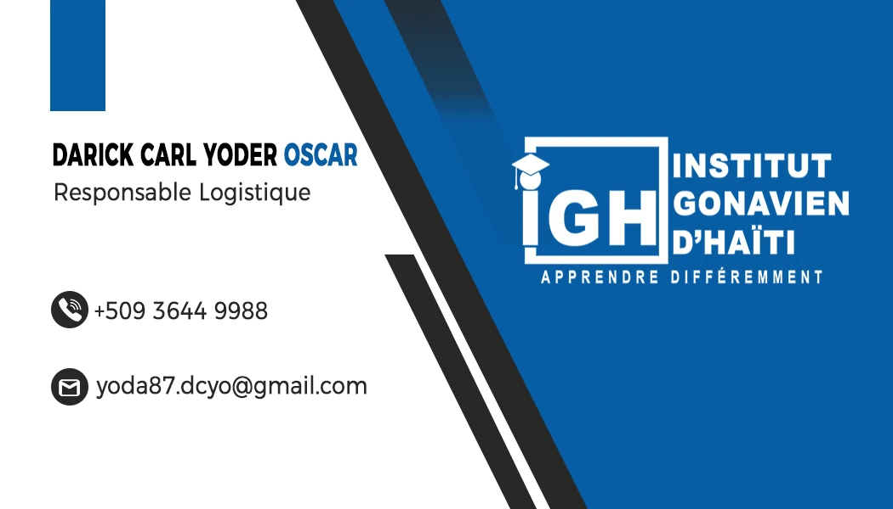
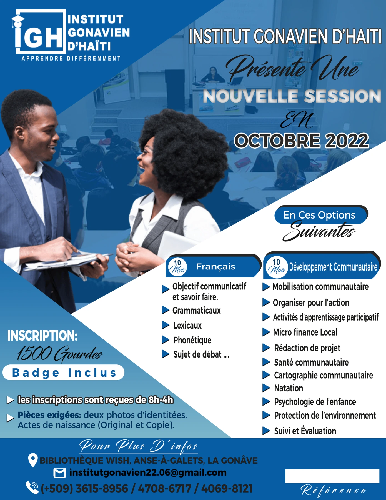
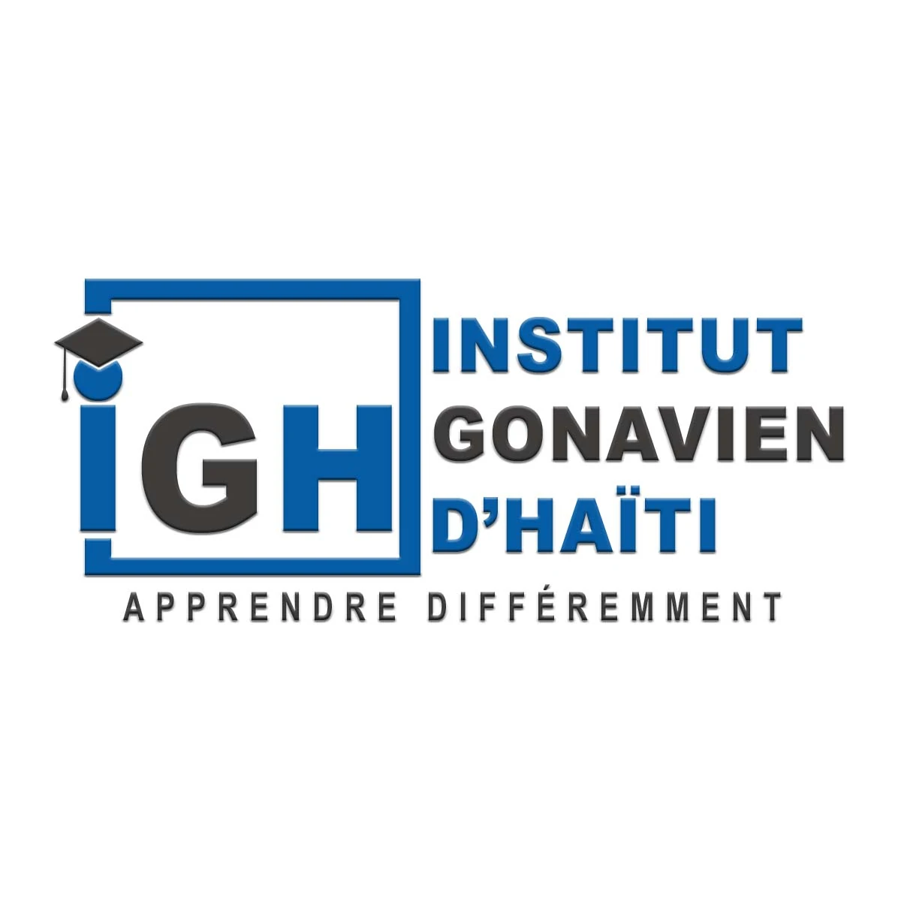

PROJET / IDENTITÉ VISUELLE & SUPPORTS
iGH.
Une identité,
plusieurs supports.
Un logo, une carte de visite et une affiche : un ensemble graphique pour l’Institut Gonavien d’Haïti, autour d’un univers bleu et blanc.
STRUCTUREInstitut Gonavien d’Haïti
MON RÔLEConception graphique

01 / LE LANGAGE VISUEL
Un signe qui
parle d’apprentissage.
Le monogramme iGH réunit les initiales de l’institut dans un cadre ouvert. Le chapeau de diplômé, intégré au « i », relie directement le signe à l’univers de l’enseignement.
Le bleu, le blanc et le gris foncé se retrouvent sur les différents supports. Le slogan « Apprendre différemment » accompagne le logo et prolonge sa signature.
02 / LES APPLICATIONS
Une même signature.
Des usages différents.

Sur la carte de visite, des diagonales séparent les coordonnées du bloc de marque. La composition reprend les couleurs et les lignes du logo.

03 / LA DÉCLINAISON
Le même logo.
Un autre fond.
La version sur fond blanc reprend le bleu et le gris foncé. Elle complète la version blanche sur fond bleu et conserve le monogramme, le cadre et le slogan.
